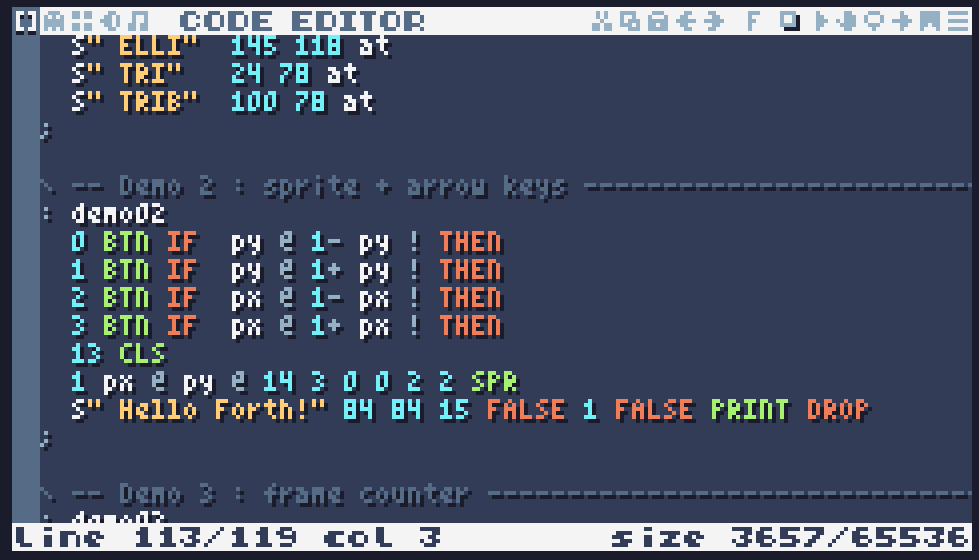
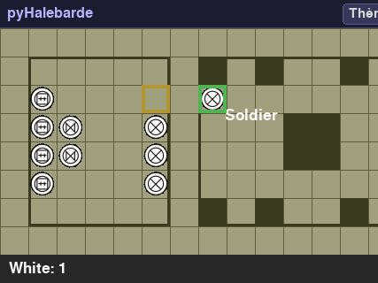
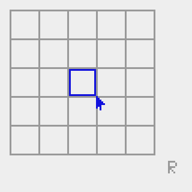

Forth pour TIC-80
Portage du langage Forth (basé sur pforth) comme langage de script pour TIC-80, la console fantasy pour créer, jouer et partager de petits jeux rétro. Ajoute Forth à la liste des langages disponibles pour écrire des cartouches, aux côtés de Lua, JavaScript, Ruby, etc.

Halebarde et Gonfanon
Jeu de stratégie au tour par tour en pygame, adapté du jeu de plateau du même nom. Deux royaumes s'affrontent sur un champ de bataille borné : soldats en cotte de mailles, archers et éclaireurs capables d'infiltrer le camp adverse. Deux joueurs en local ou en réseau, ou contre une IA à trois niveaux, avec trois thèmes graphiques.

Morpion pour Uxn
Deux morpions pour la machine virtuelle Varvara/Uxn de Hundredrabbits : une grille 3x3 et une grille 5x5 où il faut aligner quatre pièces. Jouable à la souris ou au clavier.
